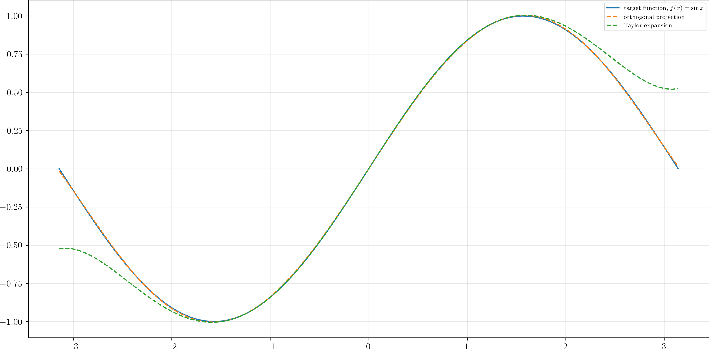

Orthogonal Projections
6.7. Orthogonal Projections#
Definition 6.4
Let \(U\) be a vector subspace of an inner product space \(V\), the orthogonal complement of \(U\), denoted by, \(U^\perp\) is defined as the vector subspace of \(V\) consists of all vectors in \(V\) that are orthogonal to every vector in \(U\). Formally,
In the definition above, we claim that \(U^\perp\) is a vector subspace. Now, we prove this briefly in the following. Suppose \(\mathbf{v}_1, \mathbf{v}_2 \in U^\perp\), then for every \(\mathbf{u} \in U\), we have \(\langle \mathbf{u}, \mathbf{v}_1 \rangle = \langle \mathbf{u}, \mathbf{v}_1 \rangle = 0\). It follows that \(\langle \mathbf{u}, \mathbf{v}_1 - \mathbf{v}_2 \rangle = 0\). Hence, \(\mathbf{v}_1 = \mathbf{v}_2 \in U^\perp\). Now, suppose \(\mathbf{v} \in U^\perp\). We have \(\langle \mathbf{u}, \mathbf{v} \rangle = 0 \; \forall \mathbf{u} \in U\). For any scalar \(a \in \FF\), it follows that \(\langle \mathbf{u}, a \mathbf{v} \rangle = a \langle \mathbf{u}, \mathbf{v} \rangle = 0\). And hence, \(a \mathbf{v} \in U^\perp\). Therefore, we see that \(U^\perp\) is indeed a vector subspace of \(V\).
We also have the following simple observations:
➀ \(V^\perp = \{\mathbf{0}\}\)
➁ \(\{\mathbf{0}\}^\perp = V\)
➂ \(U_1, U_2 \leq V, \; U_1 \leq U_2 \implies U_1^\perp \geq U_2^\perp\)
In what follows, we shall again confine ourselves to finite-dimensional vector spaces to investigate several important results.
Theorem 6.8
Let \(V\) be a inner product space, and \(U\) a finite-dimensional subspace of \(V\). Then
Note
Note that \(V\) may have infinite dimension. But its subspace \(U\) is assumed finite-dimensional.
Proof. Suppose \(U\) is not \(\{\mathbf{0}\}\) or \(V\). Otherwise the conclusion is trivial. By Corollary 2.2, there is an orthonormal basis \((\mathbf{e}_1, \ldots, \mathbf{e}_m)\) for \(U\). For any \(\mathbf{v} \in V\), we can write
Note
The interpretation of (6.22) is that we first choose a vector \(\mathbf{u} \in U\) by
And then let \(\mathbf{w} = \mathbf{v} - \mathbf{u}\). The construction of \(\mathbf{u}\) is very clever since in this way, \(\mathbf{w}\) is orthogonal to \(\mathbf{u}\) as we will see later.
Note that \(\mathbf{w} \in U^\perp\) since
Hence, (6.22) implies that \(V = U + U^\perp\).
We also need to show \(V = U \oplus U^\perp\), which can be proved by additionally showing that \(U \cap U^\perp = \{\mathbf{0}\}\). Indeed, suppose \(\mathbf{v} \in U \cap U^\perp\), then
where \(\mathbf{v}\) in the first slot can be regarded as a vector coming from \(U\), and the second \(\mathbf{v}\) is treated as a vector in \(U^\perp\). This completes the proof.
If \(V\) is finite-dimensional, we can then extend the orthogonal basis of \(U\), \(\mathcal{B}_1=(\mathbf{e}_1, \ldots, \mathbf{e}_m)\), to a basis for \(V\),
through the Gram-Schmidt process (Corollary 2.1). It is natural to guess that \(\mathcal{B}_2=(\mathbf{f}_1, \ldots, \mathbf{f}_m)\) forms a basis for the orthogonal complement \(U^\perp\). The proof is left as an exercise (Exercise 6.4).
Exercise 6.4
Suppose \(V\) is finite-dimensional in the assumption of Theorem 6.8. Show that \(\mathcal{B}_2\) forms a basis for \(U^\perp\).
Solution
First, we show that \(U^\perp\) is contained in the span of \(\mathcal{B}_2\). Let \(\mathbf{w} \in U^\perp\). By definition we have
But \(\mathbf{w}\) can be written as a linear combination of vectors in \(\mathcal{B}\)
Expanding \(\mathbf{w}\) in (6.19), we find
This shows that \(\mathbf{w}\) actually can represented by a linear combination of vectors in \(\mathcal{B}_2\). Hence, \(U^\perp \subseteq \Span \mathcal{B}_2\).
On the other hand, for any vector \(\mathbf{w} \in \Span \mathcal{B}_2\), clearly we have \(\langle \mathbf{e}_j, \mathbf{w} \rangle = 0\) for each \(j\). Therefore, the span of \(\mathcal{B}_2\) is also contained in \(U^\perp\).
In summary, we have shown
Note that \(\mathcal{B}_2\) is orthonormal, which implies \(\mathcal{B}_2\) is linearly independent. Therefore, \(\mathcal{B}_2\) is indeed a basis for \(U^\perp\).
Corollary 6.5
Let \(V\) be an inner product space, and \(U\) a finite-dimensional vector subspace. Then
Proof. We first show that \(U \subseteq (U^\perp)^\perp\). Let \(\mathbf{u} \in U\) For any \(\mathbf{w} \in U^\perp\), by definition, we have
Equivalently,
Therefore, \(\mathbf{u} \in (U^\perp)^\perp\) and hence \(U \subseteq (U^\perp)^\perp\).
Note
In the proof of \(U \subseteq (U^\perp)^\perp\), we did not use the assumption that \(U\) is finite-dimensional nor Theorem 6.8. But we will need this theorem in proving \(U \supseteq (U^\perp)^\perp\). Actually, it suffices to apply the partial result of Theorem 6.8 that \(V = U + U^\perp\).
We also need to show the other direction of inclusion. That is, for \(\mathbf{v} \in (U^\perp)^\perp\), we need to show \(\mathbf{v} \in U\). By Theorem 6.8, \(\mathbf{v}\) can be written as
for some \(\mathbf{u} \in U\) and \(\mathbf{w} \in U^\perp\). Taking the inner product with \(\mathbf{w}\) yields
It then follows that \(\mathbf{w} = \mathbf{0}\) and hence \(\mathbf{v} = \mathbf{u} \in U\), as desired.
Recall we have already defined what is a projection in Definition 2.1. A linear operator \(P\) is a projection if
This definition is very general but it is also rather abstract. Now, having the concepts of inner product space and orthogonal complement, we can define a projection on an inner-product space with more intuitive physical meanings.
Let \(V\) be an inner product space, and \(U\) a finite-decomposition subspace. By Theorem 6.8, we know that every \(\mathbf{v} \in V\) can be uniquely written as
where \(\mathbf{u} \in U\) and \(\mathbf{w} \in U^\perp\). Then the projection \(P_U\) that maps any vector in \(V\) to the subspace \(U\) can be simply defined by
Firstly, observe that it is well-defined since the representation \(\mathbf{v} = \mathbf{u} + \mathbf{w}\) is unique. And it is indeed a projection since
The following are several more properties, the proof of which is left as an exercise (Exercise 6.5).
➀ \(\im P_U = U\)
➁ \(\ker P_U = U^\perp\)
➂ \(\mathbf{v} - P_U \mathbf{v} \in U^\perp \; \forall \mathbf{v} \in V\)
➃ \(\norm{P_U \mathbf{v}} \leq \norm{\mathbf{v}} \; \forall \mathbf{v} \in V\)
Exercise 6.5
Prove the above properties.
Moreover, suppose that \((\mathbf{e}_1, \ldots, \mathbf{e}_m)\) is an orthonormal basis for \(U\), then by (6.22), \(P_U \mathbf{v}\) can be written as
By comparing the above equation (6.22) with the definition of projection on to a single vector, (6.3), we immediately find the relation
Let \(V\) be an inner product space, and \(U\) a finite-dimensional subspace, the problem of minimizing the distance between a given vector \(\mathbf{v} \in V\) and each \(\mathbf{u} \in U\) occurs frequently in applications. The solution is shown in the next theorem.
Theorem 6.9
Let \(V\) be an inner product space, and \(U\) a finite-dimensional subspace. Then for each \(\mathbf{v} \in V\), we have
Proof. Let \(\mathbf{v}\) be fixed. Because we have already know \(P_U \mathbf{v} \in U\), what is left to prove is the following inequality
Note that
By the Pythagorean Theorem (Theorem 6.1), we have
Taking the square root on both sides yields (6.23).
The following examples show that how Theorem 6.9 can be applied to approximate a continuous function using a polynomial.
Example 6.1
Consider the vector space of all continuous real-valued functions defined on \([-\pi, \pi]\), \(C[-\pi, \pi]\). Let the inner product of any pair of functions \(f\) and \(g\) in \(C[-\pi, \pi]\) be defined by
Suppose we want to approximate a target function \(f(x)\) using a polynomial with degree no larger than \(5\). In other words, we want to find a polynomial \(p(x)\) in the subspace \(P_5(\R)\) such that the norm
is minimized.
Then by Theorem 6.9 and (6.22), the optimal polynomial should be
where \((p_1, \ldots, p_6)\) is an orthonormal basis for \(P_5(\R)\).
Note
Note that Theorem 6.9 is applicable here because the subspace \(P_5(\R)\) indeed has finite dimension, namely \(6\).
To find such an orthonormal basis, we can apply the Gram-Schmidt process to the basis \((1, x, x^2, x^3, x^4, x^5)\).
Suppose the target function we want to approximate is \(\sin x\), then the polynomial calculated using (6.24) is
If the reader is familiar with calculus of mathematical analysis, then one might suggest approximating \(\sin x\) using its Taylor expanding at \(x=0\),
Fig. 6.2 plots the graphs of the target function \(\sin x\) along with the two polynomial approximations, \(p(x)\) and \(\hat{p}(x)\). As we can see, the orthogonal projection is a better approximation for it nearly overlaps with the target function.

Fig. 6.2 Comparison of approximations using orthogonal projection and Taylor expansion.#
Example 6.2